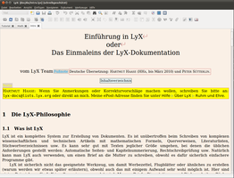
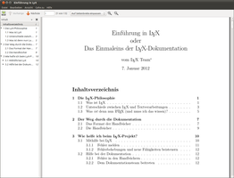
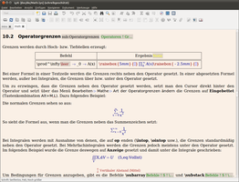

LyX
Dieser Artikel wurde für die folgenden Ubuntu-Versionen getestet:
Ubuntu 16.04 Xenial Xerus
Ubuntu 14.04 Trusty Tahr
Zum Verständnis dieses Artikels sind folgende Seiten hilfreich:
 LyX
LyX  ist ein Werkzeug zur Erstellung und Bearbeitung von Dateien des mächtigen Textsatzprogramms LaTeX. Dabei verfolgt das Projekt einen sehr interessanten Ansatz: Wichtig soll dem Nutzer von LyX in erster Linie nicht das Aussehen seines Dokumentes sein, sondern vielmehr die Struktur (What you see is what you mean, WYSIWYM). So kann man die Struktur des Dokumentes im Editor selbst hervorragend überblicken, das tatsächliche Layout sieht man jedoch nie live, sondern erst auf Tastendruck. Dieses Layout kann auch nicht direkt verändert werden, denn es basiert jeweils auf einer Latex-Vorlage. Um absolute Kontrolle über alle Aspekte des Dokumentes zu haben, muss man also Latex beherrschen.
ist ein Werkzeug zur Erstellung und Bearbeitung von Dateien des mächtigen Textsatzprogramms LaTeX. Dabei verfolgt das Projekt einen sehr interessanten Ansatz: Wichtig soll dem Nutzer von LyX in erster Linie nicht das Aussehen seines Dokumentes sein, sondern vielmehr die Struktur (What you see is what you mean, WYSIWYM). So kann man die Struktur des Dokumentes im Editor selbst hervorragend überblicken, das tatsächliche Layout sieht man jedoch nie live, sondern erst auf Tastendruck. Dieses Layout kann auch nicht direkt verändert werden, denn es basiert jeweils auf einer Latex-Vorlage. Um absolute Kontrolle über alle Aspekte des Dokumentes zu haben, muss man also Latex beherrschen.
Trotzdem lohnt es sich einen Blick auf LyX zu werfen, nicht nur zum wissenschaftlichen, sondern auch zum Publizieren im allgemeinen eignet es sich hervorragend. Sowohl aus technischer als auch aus pragmatischer Sicht, denn LyX als LaTeX-Editor zwingt den Autor sich auf das Wesentliche zu konzentrieren: den Inhalt und die Struktur.
|  |
| Erstellen / Editieren von Texten in LyX |
|  |
| Ausgegebene PDF-Datei in evince |
|  |
| Formeln, Tabellen, ... |
Installation¶
LyX kann über folgende Pakete installiert werden. Das erste ist obligatorisch, der Rest ist optional, die Installation empfiehlt sich aber, um mit LyX vernünftig arbeiten zu können (siehe auch TeX Live).
lyx (universe)
texlive-latex-recommended (universe, optional)
texlive-fonts-recommended (universe, optional)
texlive-latex-extra (universe, optional, für dinbrief, g-brief, invoice etc.)
texlive-lang-german (universe, optional, für die deutsche Silbentrennung etc.)
imagemagick (optional, für das Konvertieren zwischen verschiedenen Bildformaten und die Anzeige der Bilder in LyX)
aspell-de (optional, für die deutsche Rechtschreibprüfung (neue deutsche Rechtschreibung) in LyX)
hunspell-de-de (optional, bessere deutsche Rechtschreibprüfung)
 mit apturl
mit apturl
Paketliste zum Kopieren:
sudo apt-get install lyx texlive-latex-recommended texlive-fonts-recommended texlive-latex-extra texlive-lang-german imagemagick aspell-de hunspell-de-de
sudo aptitude install lyx texlive-latex-recommended texlive-fonts-recommended texlive-latex-extra texlive-lang-german imagemagick aspell-de hunspell-de-de
Wenn man die Pakete installiert hat, muss man noch die neuen Dokumentklassen aus den optionalen Paketen LyX bekannt machen. Dazu in LyX "Werkzeuge -> Neu konfigurieren" aufrufen.
Weitere Hinweise zur Aktivierung der Rechtschreibprüfung beachten.
PPA¶
Benutzt man eine ältere Ubuntu-Version oder möchte die aktuelle Version von LyX installieren, so kann man auf folgende Paketquelle zurückgreifen. Diese Quelle beinhaltet immer die offizielle Version und ist für verschiedene Ubuntu-Versionen verfügbar.
Adresszeile zum Hinzufügen des PPAs:
ppa:lyx-devel/release
Hinweis!
Zusätzliche Fremdquellen können das System gefährden.
Ein PPA unterstützt nicht zwangsläufig alle Ubuntu-Versionen. Weitere Informationen sind der  PPA-Beschreibung des Eigentümers/Teams lyx-devel zu entnehmen.
PPA-Beschreibung des Eigentümers/Teams lyx-devel zu entnehmen.
Damit Pakete aus dem PPA genutzt werden können, müssen die Paketquellen neu eingelesen werden.
Nach dem Aktualisieren der Paketquellen erfolgt die Installation wie oben beschrieben.
Aus Quellcode kompilieren¶
Wichtig ist, dass die Ubuntu-Quellen (deb-src) der universe-Komponente freigeschaltet wurden [2]. Danach installiert man zuerst die notwendigen Kompilierwerkzeuge [5].
Eine alte Version von LyX sollte man entfernen. Dazu die Pakete
lyx
lyx-qt
lyx-common
vollständig entfernen [1].
Jetzt installiert man die Abhängigkeiten, die für das Kompilieren wichtig sind [1]:
libqt4-core
libqt4-dev
libqt4-gui
qt4-dev-tools
qt4-qtconfig
zlib1g-dev
mit apturl
Paketliste zum Kopieren:
sudo apt-get install libqt4-core libqt4-dev libqt4-gui qt4-dev-tools qt4-qtconfig zlib1g-dev
sudo aptitude install libqt4-core libqt4-dev libqt4-gui qt4-dev-tools qt4-qtconfig zlib1g-dev
Um ab LyX 2.0.x die Rechtschreibprüfung Hunspell nutzen zu können, muss noch folgendes Paket installiert werden:
libhunspell-dev
libenchant-dev (schadet auch nicht)
mit apturl
Paketliste zum Kopieren:
sudo apt-get install libhunspell-dev libenchant-dev
sudo aptitude install libhunspell-dev libenchant-dev
Den aktuellen LyX-Quellcode kann man sich unter ftp.lip6.fr/pub/lyx/stable herunterladen. Dieser muss dann entpackt werden [6].
Mit dem gewohnten Dreisatz kann man nun den Kompiliervorgang starten [5]. Wichtig: configure muss mit den Optionen:
./configure --with-frontend=qt4 --with-qt4-dir=/usr/share/qt4
aufgerufen werden. Der Rest geschieht gemäß Anleitung.
Konfiguration¶
Einstellungen ändern¶
Wenn man die Konfiguration von LyX ändert, werden in älteren Versionen unter Umständen Umlaute leider plötzlich nicht mehr korrekt angezeigt. Dies liegt an den eingestellten Bildschirmschriftarten.
Eine funktionierende Konfiguration kann man wie folgt einstellen:
"Bearbeiten → Einstellungen → Benutzerschnittstelle → Bildschirmschriftarten"
Statt der voreingestellten "aakar-Schriften" eine geeignete Schriftfamilie auswählen, z.B.
Free[Serif|Sans|Mono]oder die Nimbus-Serie.
Deutsche Rechtschreibkorrektur¶
Über "Werkzeuge → Einstellungen → Rechtschreibprüfung". Hier wählt man "Enchant" aus und bei "Alternative Sprache" gibt man "
de_de" ein.
Problembehebungen¶
Lyx startet scheinbar nicht¶
Beim 1. Start von Lyx kann es vorkommen, dass das Programm scheinbar bei der Meldung +checking for "dvilualatex"... yes
"hängt". Hier sollte man dann Geduld haben, da es normalerweise nach einigen Minuten weiter geht und Lyx dann startet. Ab dem 2. Start sollte dann alles normal schnell ablaufen.
Menüfenster schließen sich nicht¶
Überlagern Menüfenster beim Ändern von Einstellungen (bspw. „Dokument“ → „Einstellungen…“) das eigentlich Programmfenster und lassen sich nicht mehr schließen, dann kann es helfen, die Compositing-Erweiterung des Fenstermanagers der Desktopumgebung zu deaktivieren.
Bestätigt ist das für den Fenstermanager Marco der Desktopumgebung MATE, dessen Compositing-Erweiterung unter „System“ → „Einstellungen“ → „Darstellung“ → „Fenster“ mit dem Entfernen des Hakens bei „Programmkomposit der Fensterverwaltung aktivieren“ deaktiviert werden kann.
Links¶
Dokumentation
 - empfehlenswert ist die deutsche Übersetzung des Benutzerhandbuchs und das LyX-Tutorium
- empfehlenswert ist die deutsche Übersetzung des Benutzerhandbuchs und das LyX-Tutorium
LaTeX
 Übersichtsartikel
Übersichtsartikel
- Erstellt mit Inyoka
-
 2004 – 2017 ubuntuusers.de • Einige Rechte vorbehalten
2004 – 2017 ubuntuusers.de • Einige Rechte vorbehalten
Lizenz • Kontakt • Datenschutz • Impressum • Serverstatus -
Serverhousing gespendet von